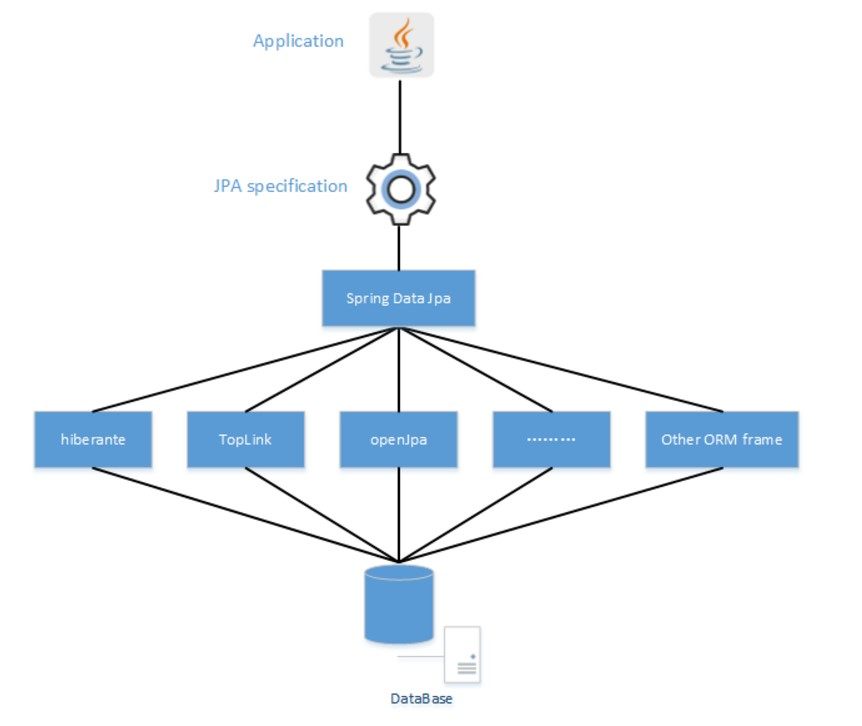

ORM：通过使用描述对象和数据库之间的映射关系，将程序中的对象自动持久化到关系数据库中，本质上来讲是将数据从一种形式到另外一种形式的转变
Spring data spa 是在JPA规范下提供了Repository层的实现，虽然ORM框架都实现了JPA的规范，但是在不同的ORM框架之间切换需要编写不同的代码，而通过使用Spring data jpa 能够方便大家在不同的ORM框架之间进行切换而不需要更改代码。并且Spring data jpa 对Repository 层的封装很好，使用起来很方便。
